Import Apple Card transactions into Actual Budget
WalletFeed writes your Apple Card transactions for Actual Budget from your iPhone to iCloud Drive, in one OFX file for each month. Then, on a computer, you import the file into an Apple Card account in Actual Budget.
Before you start
You must have:
- An iPhone with iOS 26 or a newer version
- Apple Card in Wallet on that iPhone
- WalletFeed, with access to your Wallet accounts
- WalletFeed Pro, which is necessary for destinations (a subscription with a 1-week free trial, or a one-time Lifetime purchase)
- iCloud Drive on your iPhone
- A computer with access to your iCloud Drive
- Actual Budget, open in a web browser on that computer.
WalletFeed is available only in the US.
On a Mac, iCloud Drive is in Finder. On Windows, you can use iCloud for Windows, or download the files from iCloud.com.
Actual Budget does not show the Import button on a phone screen. Thus, you import the files on a computer.
Step 1: Add an OFX file in WalletFeed
-
On your iPhone, open WalletFeed.
-
Tap Destinations.
-
Tap + at the top of the screen.

-
In the Destinations search field, type
Actual.
-
Tap OFX File.
If you do not have WalletFeed Pro, the WalletFeed Pro screen opens. After you get WalletFeed Pro, the Files screen opens.
-
Make sure that Format is OFX.

Do not use QIF for Actual Budget. A QIF file has no transaction IDs. Thus, Actual Budget can show two charges with the same amount as one transaction.
-
Tap Folder.
-
Select a folder in iCloud Drive.
The Folder row shows the name of the folder. You open this folder on your computer in Step 3.
-
To use a different name for the files, type the name in Name.
Each file has the transactions of one month. The name of the file has the month, such as
WalletFeed 2026-10.ofx. -
Tap Add.
-
When WalletFeed shows Save Transactions to Files?, tap Save.
The message shows the data that the folder receives. It also shows the Wallet accounts and the start date of this data. If you tap Cancel, WalletFeed removes the new destination.
WalletFeed adds the destination to Destinations with the name WalletFeed, or the name that you typed. Then WalletFeed writes a file for each month that has posted transactions.
If WalletFeed has access to Apple Cash or Savings, the files also contain their transactions. Actual Budget does not import these transactions from a file that also has Apple Card transactions. To import them, refer to Import Apple Cash or Savings.
Step 2: Make an Apple Card account in Actual Budget
You do this step one time.
-
On your computer, open Actual Budget in a web browser.
-
If Actual Budget shows Sign in to this Actual instance, get access to Actual Budget with the password of your server.
-
If Actual Budget shows Files, click the name of your budget.
-
If Actual Budget shows Welcome to Actual, click Start budgeting.
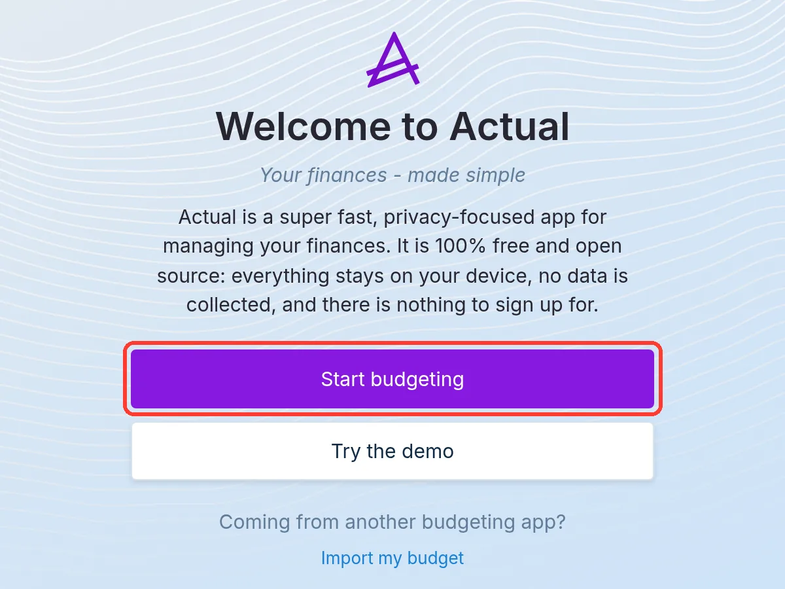
Actual Budget makes a budget with the name My Finances. Do not click Import my budget, because it is not for OFX files.
-
At the bottom of the sidebar, click Add account.
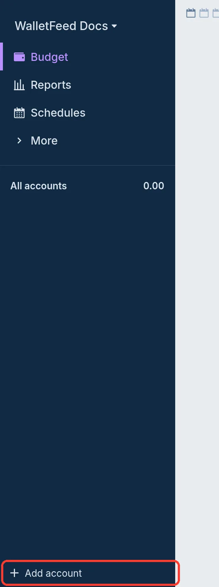
-
Click Create a local account.
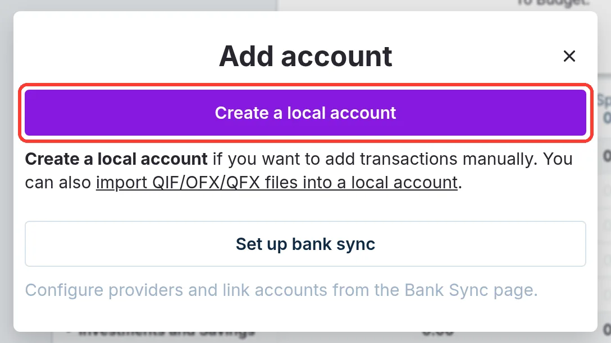
-
In Name:, type
Apple Card. -
Do not select Off budget.
You cannot change Off budget after you make the account.
-
Make sure that Balance: is
0. -
Click Create.
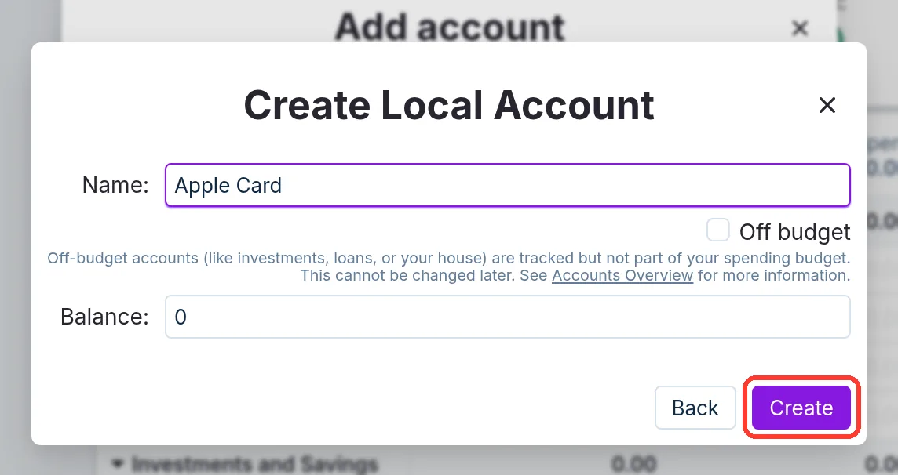
Actual Budget opens the Apple Card account page. The sidebar shows Apple Card below On budget.
Step 3: Import the file in Actual Budget
Do these steps each time that you import new transactions into Actual Budget.
-
On your computer, in the Actual Budget sidebar, click Apple Card.
Actual Budget puts all the transactions from the file into the account that is open.
-
Click Import.
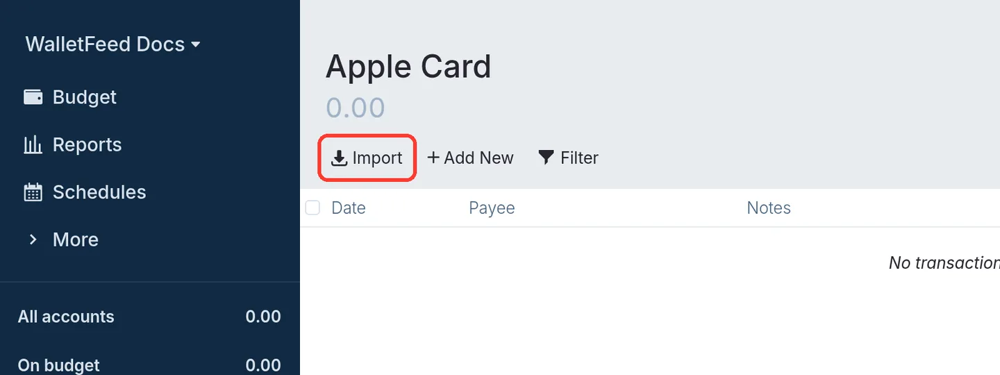
-
In the window that your browser shows, open the folder in iCloud Drive that you selected in Step 1.
-
Open the file of the month, such as
WalletFeed 2026-10.ofx.You can open only one file at a time. Do not open
WalletFeed Test.ofx, because it has only a sample transaction. -
In Import transactions (OFX), make sure that each new transaction has a blue + icon.
-
Click the import button, such as Import 6 transactions.
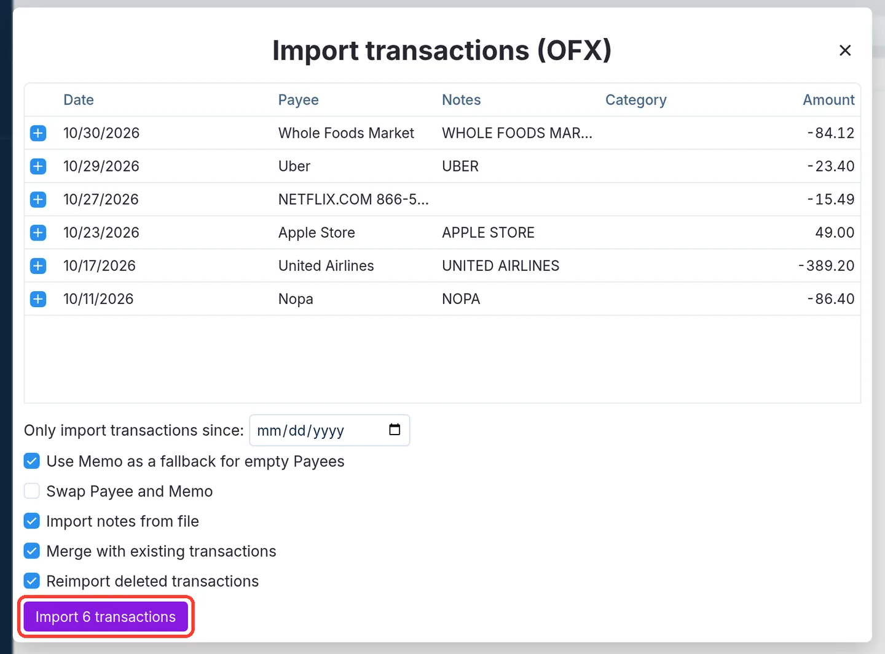
The number in the button is the number of new transactions. It is not necessary to change the checkboxes below the list.
-
Make sure that the Apple Card page shows the transactions.
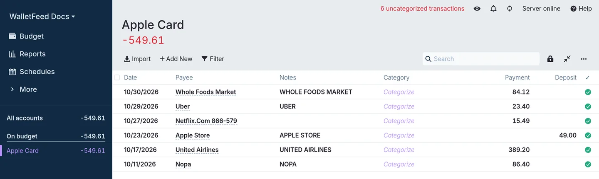
At the top of the page, Actual Budget shows the number of transactions without a category, such as 6 uncategorized transactions.
Import the same month again
WalletFeed updates the file of the month when your transactions change. You can import the file again during the month or after the end of the month. Actual Budget uses the ID of each transaction to find the transactions that you imported. It adds only the new transactions.
-
In the Actual Budget sidebar, click Apple Card.
-
Click Import.
-
Open the file of the month again, such as
WalletFeed 2026-10.ofx. -
Make sure that only the new transactions have a blue + icon.
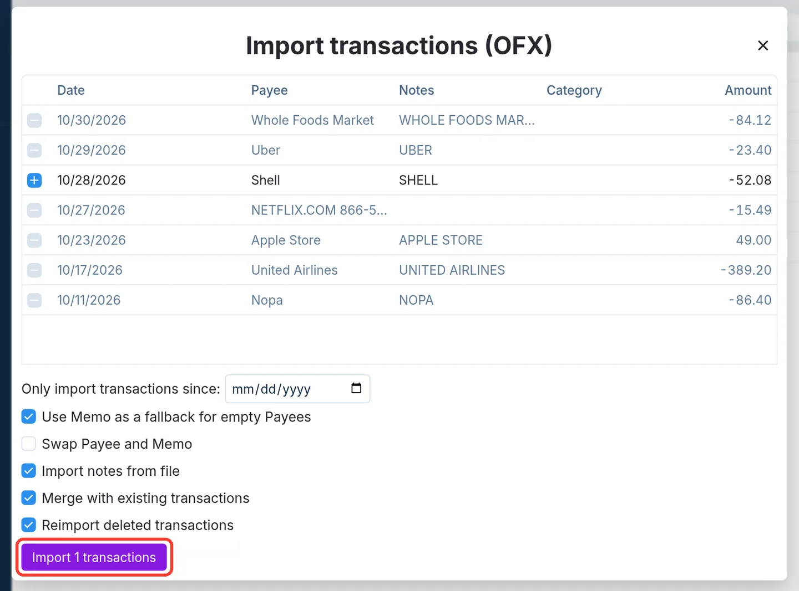
The transactions that you imported have gray rows, and Actual Budget does not select them.
-
Click the import button, such as Import 1 transactions.
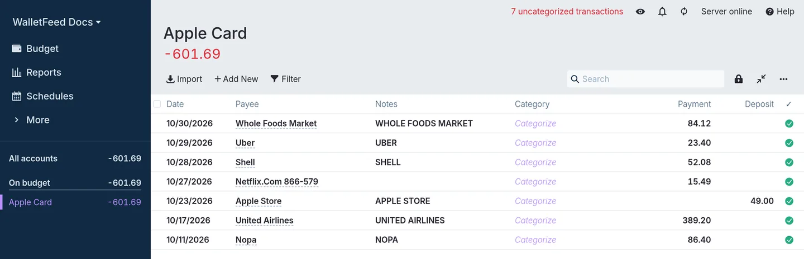
A transaction goes into the file of the month of the purchase. A purchase at the end of a month can post after the end of that month. When it posts, WalletFeed adds the transaction to the file of the month of the purchase. If you import the file of each month again some days after the end of the month, Actual Budget also gets these transactions.
Import Apple Cash or Savings
Actual Budget does not import Apple Cash or Savings transactions from a file that also has Apple Card transactions. Thus, you use one destination and one Actual Budget account for each Wallet account.
To write only Apple Card transactions to the files of your first destination, do these steps:
-
In WalletFeed, tap Destinations.
-
Tap your OFX destination, such as WalletFeed.
-
Set Filter to on.
-
Tap Accounts.
-
Select Apple Card.
-
On your iPhone, open the Files app.
-
In the destination folder, delete the files of this destination, such as
WalletFeed 2026-10.ofx.These files can contain the transactions of all your Wallet accounts, because WalletFeed wrote them before you set the filter.
-
Open WalletFeed again.
-
On the destination screen, tap Send History › All.
Then WalletFeed writes the files again with only the Apple Card transactions.
To add a destination for Apple Cash or Savings, do these steps:
- Add one more OFX File destination with a different Name, such as
Apple Cash(refer to Step 1). - Do steps 1 thru 9 above again for the new destination, with Apple Cash or Savings in step 5.
- In Actual Budget, make one more local account for that Wallet account, such as
Apple Cash(refer to Step 2). - Import the files of the new destination into that account (refer to Step 3).
Data that Actual Budget receives
Each OFX file has the posted transactions of one month. This table shows the column in Actual Budget for each Wallet field.
| Wallet | Actual Budget |
|---|---|
| Posted date | Date. This date can be after the date of the purchase in Wallet. |
| Merchant, or the description if Wallet has no merchant | Payee, with 32 characters at most |
| Description, card statement text and the value in a foreign currency | Notes |
| A purchase or a fee | Payment, without a minus sign |
| A refund, a payment or a deposit | Deposit |
| Transaction ID | Actual Budget does not show the ID. It uses the ID to find the transactions that you imported. |
| Category | The file has no category. Category shows Categorize. |
Purchases make the balance of the Apple Card account less than zero, such as -549.61.
When Actual Budget adds a new payee, it can change some uppercase letters in the name to lowercase letters. For example, "NETFLIX.COM 866-579" becomes "Netflix.Com 866-579".
If Notes shows the same text as Payee, you can clear Import notes from file in Import transactions (OFX). Then Notes has no text, and Actual Budget does not show the description, the card statement text or the value in a foreign currency.
If WalletFeed has access to more than one Wallet account, each file has the transactions of all these accounts. Actual Budget imports only the Apple Card transactions from a file that has them. When a file has no Apple Card transactions, Actual Budget puts all its transactions into the account that is open.
WalletFeed writes the files only to the folder that you select. WalletFeed has no account and no WalletFeed servers.
Changes to the files
While WalletFeed is open, the file of the month receives changes in seconds. When WalletFeed is not open, iOS starts WalletFeed approximately 1 hour or less after a change in Wallet. If Background Sync is on in Settings › Sync, WalletFeed then updates the file. If WalletFeed cannot open the folder at that time, WalletFeed changes the file when you open WalletFeed, or while your iPhone is on a charger.
Actual Budget gets the changes only when you import the file again.
WalletFeed writes only posted transactions to an OFX file. After a pending charge posts, WalletFeed writes the charge to the file. The charge has the same ID before and after it posts. A declined charge does not post. Thus, the file does not contain it. A refund is a different transaction, and Actual Budget shows it in Deposit.
If Wallet removes a transaction of this month or the previous month, WalletFeed removes it from the file. If you imported the transaction, it stays in Actual Budget. You can delete it in Actual Budget.
Send previous transactions
A new destination also receives previous transactions from the start date in Settings › Sync › Initial History. Initial History is All until you change it. WalletFeed writes a file for each month that has posted transactions. It is not necessary to import all the files.
To change Initial History, do these steps before you add the destination:
-
In WalletFeed, tap Settings (the gear button) at the top of the screen.
-
In Sync, tap Initial History.

-
Select Today, 30 Days, 90 Days, 1 Year or All.
To write the files of previous months again, use Send History:
- In Destinations, tap your OFX destination, such as WalletFeed.
- Tap Send History.
- Select 30 Days, 90 Days, 1 Year or All.
WalletFeed writes the file of each month in that period again. When you import a file again, Actual Budget adds only the transactions that it does not have.
Change or remove the destination
In Destinations, tap your OFX destination. Then use this table:
| Change | On the destination screen |
|---|---|
| Stop the changes to the files for a time | Set Enabled to off. |
| Write only Apple Card transactions | Refer to Import Apple Cash or Savings. |
| Write only some transactions | Set Filter to on. Then set Include, Minimum, Accounts, Categories or Exclude. |
| Use a different folder | Tap Change Folder. Then select the folder. WalletFeed writes all the files again in the new folder. |
| Make sure that WalletFeed can write to the folder | Tap Send Test. The folder gets WalletFeed Test.ofx with a sample transaction. Do not import this file. |
| Remove the destination | Tap Delete. Then tap Delete again. The files stay in the folder, and the transactions stay in Actual Budget. |
For more information about the filter, refer to Choose what a destination receives.
If there is a problem
If Actual Budget does not show “Import”
Actual Budget shows Import only on the page of an account, and not on a phone screen.
- Open Actual Budget in a web browser on a computer.
- In the sidebar, click Apple Card.
If the button shows “Import 0 transactions”
Actual Budget has all the transactions in the file. This is not an error.
-
Click × to close the window.
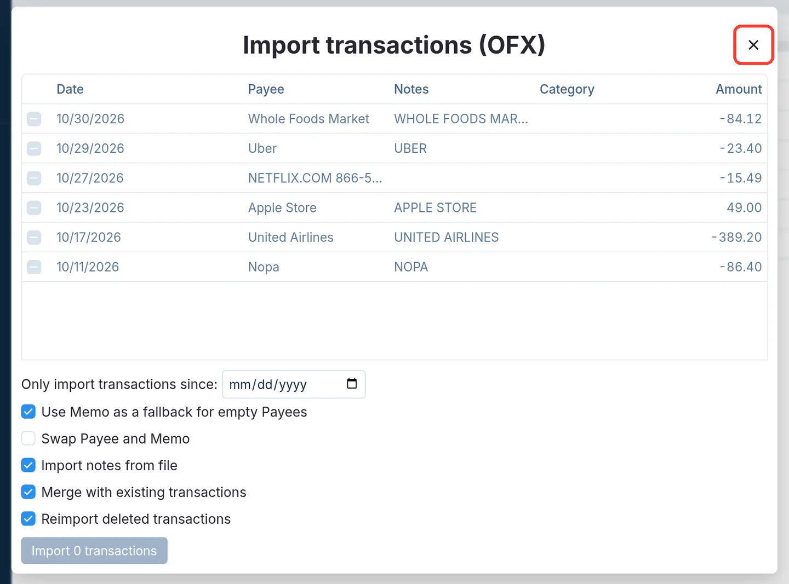
If Actual Budget shows a deleted transaction again
Actual Budget selects Reimport deleted transactions if you do not change it. Thus, Actual Budget shows deleted transactions as new when you import a month again.
-
In Import transactions (OFX), clear Reimport deleted transactions.
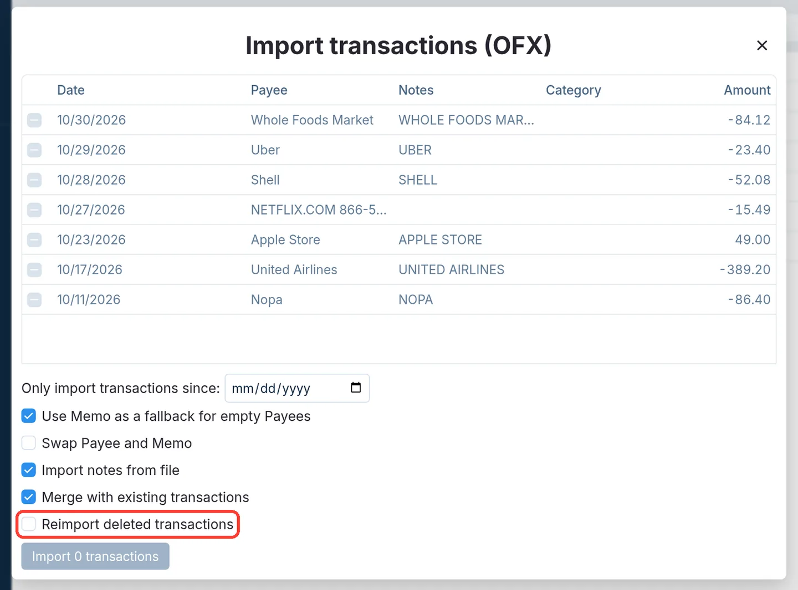
You can also clear the checkbox of the deleted transaction.
-
If the import button shows Import 0 transactions, click ×.
-
If the import button shows a different number, click it.
If Apple Cash or Savings transactions are not in Actual Budget
Actual Budget does not import Apple Cash or Savings transactions from a file that also has Apple Card transactions.
- Add a destination for each Wallet account (refer to Import Apple Cash or Savings).
If Apple Cash or Savings transactions are in the Apple Card account
If a file has no Apple Card transactions, Actual Budget puts all its transactions into the account that is open.
- Write only Apple Card transactions to the files of your OFX destination (refer to Import Apple Cash or Savings).
- In Actual Budget, delete the transactions that are not from Apple Card.
If the dates in Actual Budget are after the dates in Wallet
Actual Budget shows the posted date of the charge. Wallet shows the date of the purchase. This is not an error.
If a pending charge is not in Actual Budget
WalletFeed writes a charge to the file only after it posts.
- After the charge posts in Wallet, import the file of the month again.
If the folder has no file for a month
WalletFeed writes a file only for a month that has posted transactions.
-
In WalletFeed, open the destination.
-
Tap Send Test.
Then the folder gets
WalletFeed Test.ofx. If the folder has this file, WalletFeed can write to the folder. -
To write the files of all months, tap Send History.
-
Tap All.
If WalletFeed shows “Couldn't open this folder.”
WalletFeed cannot get access to the folder that you selected. WalletFeed shows this message on the Files screen and on the destination screen.
- Tap Folder on the Files screen, or Change Folder on the destination screen.
- Select a different folder in iCloud Drive.
If the destination shows “Can't open the folder. Choose it again.”
WalletFeed does not have access to the folder of the destination.
- In WalletFeed, tap Destinations.
- Tap the destination.
- Tap Change Folder.
- Select the folder again.
Related
Updated October 30, 2026